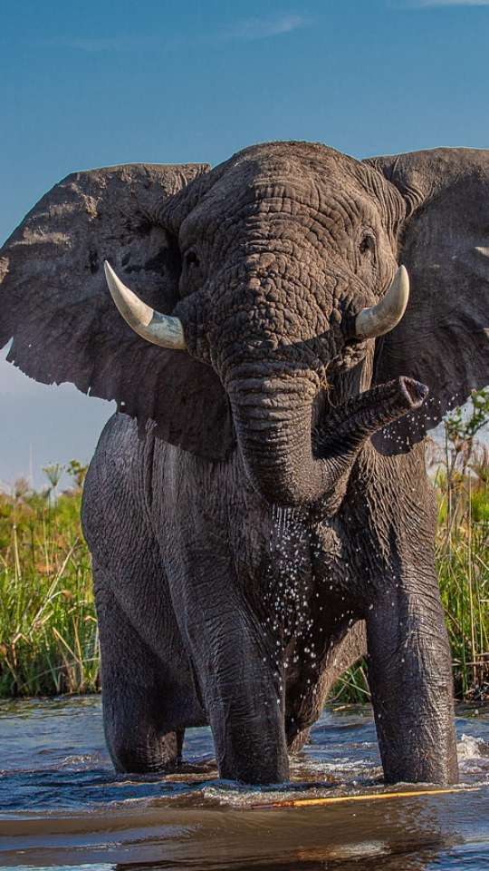

Os leões são grandes felinos conhecidos por sua majestosa juba e impressionante força. Eles habitam as savanas da África e, em tempos passados, partes da Ásia. Os leões são animais sociais que vivem em grupos chamados "trocas". Esses grupos são liderados por um macho dominante, e as fêmeas trabalham juntas para caçar presas, enquanto os machos protegem o território.
A dieta dos leões consiste principalmente de herbívoros, como zebras e gnus. Eles são excelentes caçadores e usam a estratégia de emboscada para pegar suas presas. Os rugidos dos leões são famosos e podem ser ouvidos a quilômetros de distância, ajudando a marcar território e manter contato com outros membros da troca.
Os leões são símbolos de coragem e nobreza em muitas culturas e são frequentemente associados à realeza. No entanto, eles enfrentam desafios de conservação devido à perda de habitat e à caça ilegal. É importante proteger esses magníficos animais e seus habitats para garantir que continuem a vagar pelas savanas africanas.
Os tigres são felinos impressionantes e conhecidos por sua beleza e força. Eles são nativos da Ásia e são os maiores felinos do mundo. Os tigres têm uma pelagem laranja com listras pretas que ajuda a camuflá-los na selva.
Esses predadores solitários vivem em uma variedade de habitats, incluindo florestas, pântanos e montanhas. Eles são excelentes caçadores, capazes de derrubar presas grandes, como veados e javalis.
Infelizmente, os tigres enfrentam sérias ameaças à sua sobrevivência, incluindo a perda de habitat e a caça ilegal. Algumas subespécies de tigres já estão extintas, e outras estão em perigo crítico. A conservação dos tigres é vital para garantir que esses belos felinos continuem a prosperar na natureza.
Muitos esforços de conservação estão em andamento para proteger os tigres, incluindo a criação de reservas e o combate à caça ilegal. A preservação dessas criaturas majestosas é essencial para manter o equilíbrio dos ecossistemas em que vivem.

Os elefantes são os maiores mamíferos terrestres do planeta, conhecidos por suas imponentes presas e inteligência notável. Eles são nativos da África e da Ásia e vivem em uma variedade de habitats, desde florestas até savanas e pântanos.
Esses gigantes gentis são animais sociais que vivem em grupos chamados "rebanhos" e têm uma forte ligação familiar. As fêmeas, conhecidas como vacas, desempenham um papel central na organização do grupo, enquanto os machos, chamados touros, muitas vezes levam uma vida mais solitária.
Os elefantes têm uma incrível memória e são capazes de reconhecer parentes, lembrar fontes de água e até mesmo resolver quebra-cabeças complexos. Eles se comunicam por meio de uma variedade de sons e gestos, tornando sua comunicação muito sofisticada.
Infelizmente, os elefantes enfrentam ameaças sérias, como a caça ilegal por suas presas e a perda de habitat devido à expansão humana. Muitos esforços de conservação estão em andamento para proteger esses majestosos animais e garantir que eles continuem a prosperar na natureza. A conservação dos elefantes é essencial, não apenas para a sobrevivência deles, mas também para a saúde dos ecossistemas em que habitam.
Os hipopótamos são mamíferos aquáticos imponentes que habitam as regiões da África. Conhecidos por sua enorme massa corporal e cabeças distintivas, esses animais são uma visão icônica nos rios e lagos africanos. Os hipopótamos são animais herbívoros, alimentando-se principalmente de capim durante a noite. Apesar de seu tamanho, são surpreendentemente ágeis na água, onde podem nadar e submergir por longos períodos. Eles também são conhecidos por sua natureza territorial e por serem protetores de seus grupos familiares. Embora sejam animais majestosos, os hipopótamos também podem ser extremamente perigosos quando provocados, tornando-se uma das criaturas mais temidas da savana africana.
As cobras são répteis fascinantes que habitam todos os continentes, exceto a Antártida. Elas são conhecidas por sua forma alongada e ausência de patas, o que as distingue de outros animais. As cobras têm uma grande variedade de tamanhos, cores e padrões, tornando-as incrivelmente diversas.
Um dos traços mais notáveis das cobras é a habilidade de injetar veneno através de presas ocas, como as serpentes venenosas, ou de esmagar e engolir suas presas inteiras, como as serpentes constritoras. A visão das cobras pode variar de uma espécie para outra, mas muitas dependem principalmente de outros sentidos, como o olfato e o calor, para caçar suas presas.
Algumas cobras são venenosas e podem representar um perigo para os seres humanos, enquanto a maioria é inofensiva. As cobras desempenham um papel vital nos ecossistemas, ajudando a controlar as populações de roedores e outros animais.
Em resumo, as cobras são criaturas únicas e desempenham papéis importantes na natureza, mesmo que sua aparência possa ser intimidante para algumas pessoas.
Os falcões são aves de rapina notáveis e ágeis que conquistaram os céus com suas habilidades de caça. Eles são conhecidos por suas asas pontiagudas e olhos afiados, que lhes conferem uma visão excepcional. Os falcões têm uma diversidade de espécies, com tamanhos variando de pequenos falcões-americanos a majestosos falcões-peregrinos.
A característica marcante dos falcões é sua capacidade de voar rapidamente e caçar presas no ar. Eles se alimentam principalmente de aves, roedores e até insetos. Os falcões-peregrinos, por exemplo, são conhecidos por suas incríveis velocidades durante o mergulho para apanhar presas no ar.
Essas aves de rapina desempenham um papel importante no equilíbrio dos ecossistemas, ajudando a controlar as populações de suas presas. Além disso, os falcões têm sido admirados por culturas ao longo da história, simbolizando a agilidade e a visão afiada.
Em resumo, os falcões são predadores habilidosos que personificam a graça e a eficiência no reino das aves, desempenhando um papel vital na cadeia alimentar e na cultura humana.
As ienas são carnívoros sociais que habitam as regiões da África e partes da Ásia. Elas pertencem à família Hyaenidae e são conhecidas por sua aparência distintiva e comportamento único. As ienas têm corpos esguios, orelhas pontudas e mandíbulas poderosas, e podem variar em tamanho, dependendo da espécie.
As ienas são notáveis por serem carnívoros versáteis e até mesmo necrófagos, o que significa que se alimentam de carcaças deixadas por outros predadores. Elas têm uma mordida extremamente forte e são capazes de quebrar ossos para obter acesso à medula óssea, o que lhes confere uma vantagem na competição por recursos alimentares.
As ienas vivem em grupos sociais chamados clãs, com uma estrutura hierárquica complexa. São lideradas por uma fêmea dominante que ocupa o topo da hierarquia. A cooperação dentro desses clãs é fundamental para a caça e a defesa territorial.
Apesar de sua reputação de vilãs em histórias populares, as ienas desempenham um papel importante no ecossistema africano, ajudando a limpar carcaças e controlar populações de animais doentes ou fracos. Elas são animais fascinantes que desafiam muitos estereótipos sobre predadores e sociedades animais.
Em resumo, as ienas são carnívoros sociais que têm um comportamento único e desempenham um papel fundamental na ecologia africana. Suas características peculiares e habilidades de caça fazem delas um tema intrigante no reino animal.
As zebras são animais selvagens que vivem nas regiões da África. Elas são conhecidas por sua pelagem listrada única, que as torna instantaneamente reconhecíveis. Essas listras ajudam a zebras a se camuflarem nas savanas africanas e a confundir predadores, como leões e leopardos.
As zebras são herbívoras, se alimentando principalmente de capim, folhas e arbustos. Elas vivem em grupos chamados manadas, que geralmente consistem em várias fêmeas, seus potros e um macho dominante. A coordenação e a comunicação dentro da manada são essenciais para proteger contra predadores.
Uma característica notável das zebras é sua capacidade de correr rapidamente, o que as ajuda a escapar de ameaças. Além disso, são animais sociais e as manadas são um exemplo de solidariedade entre os membros.
Em resumo, as zebras são mamíferos africanos famosos por suas distintas listras, comportamento gregário e habilidades de sobrevivência nas vastas savanas. Elas representam uma parte icônica da vida selvagem africana.
Os jacarés são répteis semelhantes a crocodilos que habitam áreas aquáticas nas Américas. Eles são parentes próximos dos crocodilos, compartilhando muitas características físicas e comportamentais. Os jacarés são conhecidos por sua aparência distintiva, com focinhos largos e dentes afiados visíveis mesmo quando a boca está fechada.
Esses répteis são adaptados para a vida em ambientes aquáticos, sendo nadadores ágeis e capazes de permanecer submersos por longos períodos. Alimentam-se de peixes, aves, mamíferos e até mesmo de outros répteis que se aproximam da água. Sua técnica de caça envolve esperar pacientemente e então atacar com rapidez, usando sua poderosa mandíbula para capturar presas.
Os jacarés desempenham um papel importante nos ecossistemas aquáticos, ajudando a controlar as populações de espécies que habitam esses habitats. Além disso, suas peles são valorizadas na indústria da moda, tornando a caça de jacarés um problema de conservação em algumas áreas.
Esses répteis têm uma história fascinante e são frequentemente associados a lendas e mitos nas regiões onde são encontrados. No entanto, é fundamental proteger os jacarés e seus habitats para garantir sua sobrevivência e o equilíbrio dos ecossistemas aquáticos. Em resumo, os jacarés são criaturas aquáticas impressionantes que desempenham um papel importante na natureza e têm um lugar distinto na cultura das Américas.
As girafas são os gigantes pacíficos das savanas africanas, conhecidas por seus pescoços longos e elegantes. Elas são os mamíferos terrestres mais altos do planeta e têm características únicas que as tornam fascinantes para os observadores da vida selvagem.
As girafas têm uma pelagem manchada que serve tanto para protegê-las contra predadores quanto como um sistema de regulação de temperatura, uma vez que as manchas escuras absorvem o calor do sol. Seu pescoço alongado não tem apenas a função de alcançar folhas nas copas das árvores, mas também é usado em combates de cabeçadas entre machos durante a época de acasalamento.
Elas são herbívoras, alimentando-se principalmente de folhas, brotos e frutos de árvores de grande porte. As girafas vivem em grupos sociais chamados "toupeiras" e são lideradas por uma fêmea dominante. Sua incrível visão e agilidade tornam-nas difíceis de serem surpreendidas por predadores.
As girafas são um símbolo icônico da vida selvagem africana e são apreciadas em todo o mundo por sua graça e majestosidade. Infelizmente, enfrentam desafios de conservação devido à perda de habitat e à caça ilegal. Preservar essas criaturas graciosas e as vastas paisagens onde habitam é essencial para garantir sua sobrevivência. Em resumo, as girafas são criaturas magníficas e únicas que inspiram admiração em todos que têm a sorte de vê-las em seu habitat natural.
As chitas, também conhecidas como guepardos, são felinos incrivelmente ágeis e velozes que habitam principalmente as áreas da África e do Irã. Elas são conhecidas por sua notável velocidade, sendo os mamíferos terrestres mais rápidos do planeta, podendo atingir velocidades de até 100 km/h em curtas rajadas.
Esses felinos têm uma pelagem distintiva, com manchas pretas espalhadas por um fundo dourado, o que lhes confere uma camuflagem eficaz na savana africana. As chitas têm corpos esguios e pernas longas, características que lhes proporcionam uma agilidade impressionante.
As chitas são carnívoras e caçam principalmente presas como gazelas e impalas. Elas se aproximam sorrateiramente de suas presas e, em uma explosão de velocidade, fazem uma corrida final para capturá-las. No entanto, sua velocidade é uma vantagem de curta distância, e elas precisam se aproximar bastante de suas presas para ter sucesso.
Infelizmente, as chitas enfrentam ameaças de conservação, incluindo a perda de habitat e conflitos com seres humanos. Preservar esses felinos incríveis é vital para garantir que eles continuem a desempenhar seu papel no ecossistema africano e a inspirar admiração em todo o mundo. Em resumo, as chitas são felinos notáveis que personificam velocidade e graça na vida selvagem africana.

 Os tigres são felinos impressionantes e conhecidos por sua beleza e força. Eles são nativos da Ásia e são os maiores felinos do mundo. Os tigres têm uma pelagem laranja com listras pretas que ajuda a camuflá-los na selva.
Esses predadores solitários vivem em uma variedade de habitats, incluindo florestas, pântanos e montanhas. Eles são excelentes caçadores, capazes de derrubar presas grandes, como veados e javalis.
Infelizmente, os tigres enfrentam sérias ameaças à sua sobrevivência, incluindo a perda de habitat e a caça ilegal. Algumas subespécies de tigres já estão extintas, e outras estão em perigo crítico. A conservação dos tigres é vital para garantir que esses belos felinos continuem a prosperar na natureza.
Muitos esforços de conservação estão em andamento para proteger os tigres, incluindo a criação de reservas e o combate à caça ilegal. A preservação dessas criaturas majestosas é essencial para manter o equilíbrio dos ecossistemas em que vivem.
Os tigres são felinos impressionantes e conhecidos por sua beleza e força. Eles são nativos da Ásia e são os maiores felinos do mundo. Os tigres têm uma pelagem laranja com listras pretas que ajuda a camuflá-los na selva.
Esses predadores solitários vivem em uma variedade de habitats, incluindo florestas, pântanos e montanhas. Eles são excelentes caçadores, capazes de derrubar presas grandes, como veados e javalis.
Infelizmente, os tigres enfrentam sérias ameaças à sua sobrevivência, incluindo a perda de habitat e a caça ilegal. Algumas subespécies de tigres já estão extintas, e outras estão em perigo crítico. A conservação dos tigres é vital para garantir que esses belos felinos continuem a prosperar na natureza.
Muitos esforços de conservação estão em andamento para proteger os tigres, incluindo a criação de reservas e o combate à caça ilegal. A preservação dessas criaturas majestosas é essencial para manter o equilíbrio dos ecossistemas em que vivem.